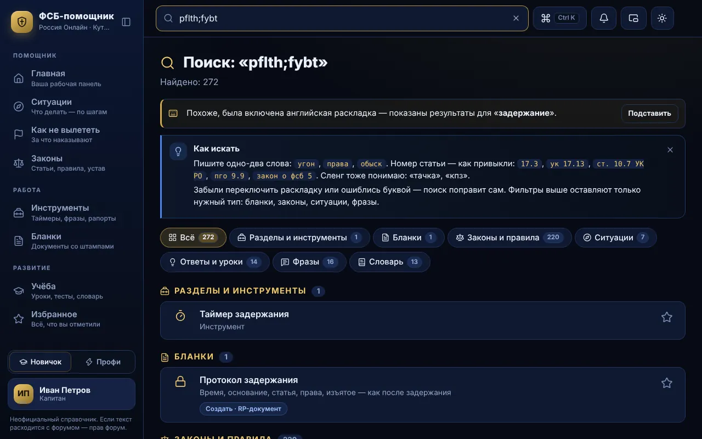
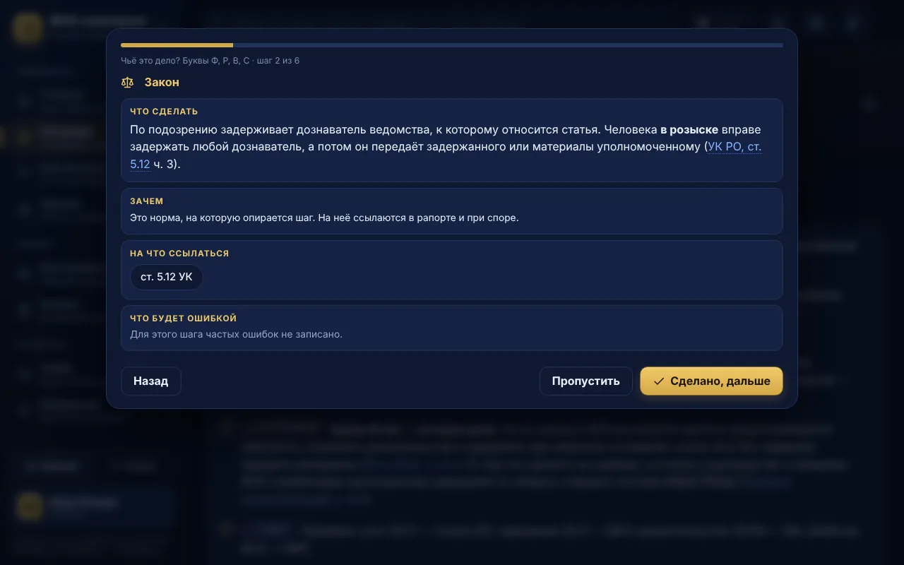
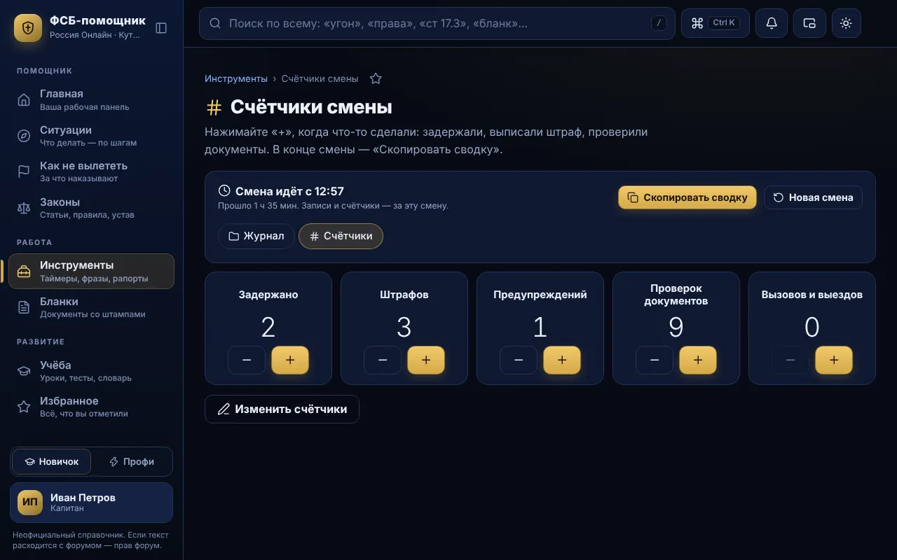
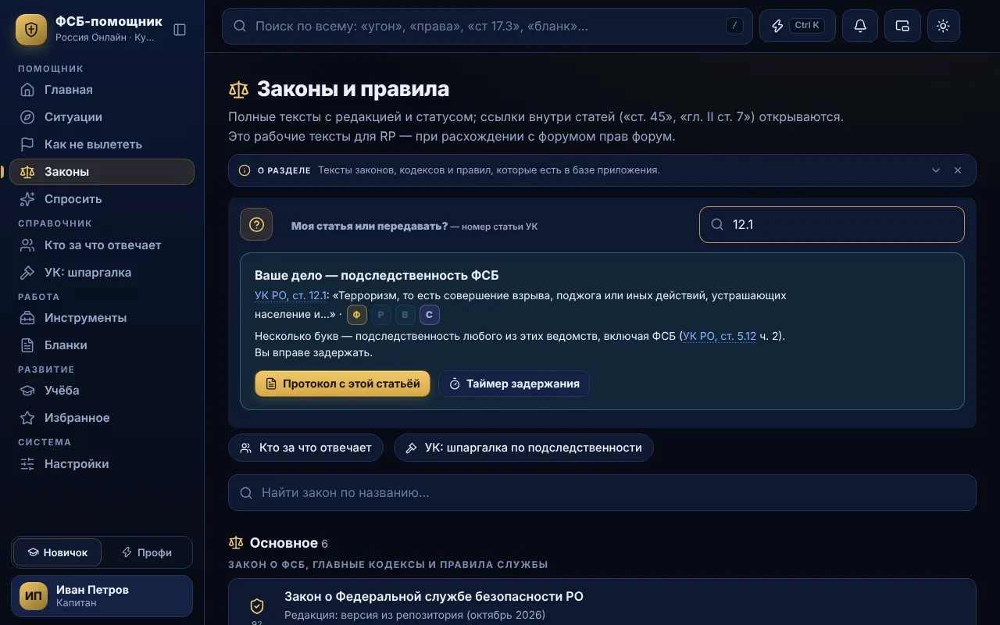

Законы с умным поиском
1 353 статей из 19 законов и правил сервера. Номер — как привыкли («ук 17.13», «пго 9.9»), слова — как говорите («угнал», «тачка»). Раскладку и опечатки поиск исправляет сам.
Законы с умным поиском, ситуации по шагам, бланки с печатями, таймер задержания и журнал смены. Нажали Insert — и помощник открыт прямо в «России Онлайн», на сервере «Кутузовский».


 Insertпанель поверх игры
Insertпанель поверх игры
Всё, что нужно на смене, — в одном окне и поверх игры. Вот что меняется в первый же день.
Режим «Новичок» объясняет каждый шаг, «Профи» убирает лишнее — переключается в один щелчок. Все цифры ниже — из самой программы.
1 353 статей из 19 законов и правил сервера. Номер — как привыкли («ук 17.13», «пго 9.9»), слова — как говорите («угнал», «тачка»). Раскладку и опечатки поиск исправляет сам.
27 ситуаций: задержание, обыск, проверка документов, «чьё это дело». Режим «Провести меня по шагам» — что сделать, что сказать, на что сослаться и что будет ошибкой.
Реальное и процессуальное время, паузы и следующий шаг. Завершили — запись сама легла в журнал смены.
12 видов документов: протокол, рапорт, постановления, доклад. Гильош, микротекст, номер бланка, 21 печать и штамп. На выходе — PDF, картинка для форума или текст с разметкой.
Кто, по каким статьям, чем кончилось. Счётчики с «+» одним нажатием. Сводка для доклада копируется кнопкой.
Insert — и помощник открыт прямо в игре: фразы, ситуации, таймеры, законы. Закрыли — управление снова у игры. В игру ничего не вводит: вставляете сами.
62 фраз для рации и разговора, свои отыгровки по строкам и горячие слоты Alt+1…9.
6 ведомств: ФСБ, МВД, СК, прокуратура, ГИБДД, военная полиция. Ввели статью — ответ «ваше или передавать» и почему.
11 уроков с тестами, «работа над ошибками», словарь на 38 терминов и экзамен: 30 вопросов за 25 минут, сдан от 95 %.
С версии 4.0 в одной программе два модуля: ФСБ и Армия. Какой открыть, решает ключ, который выдаёт владелец; разделы, законы, инструменты и данные модулей не смешиваются. Ключи ФСБ открывают ровно то, что и раньше.


Шесть коротких сценариев — от первого запуска до сданного экзамена. Каждый повторяет то, что программа подсказывает внутри.
От скачивания до первого входа — ничего настраивать не нужно.
Права администратора не нужны. Если Windows покажет «Система Windows защитила ваш компьютер» — «Подробнее», затем «Выполнить в любом случае».
Впишите игровой ник в виде Имя_Фамилия и отправьте заявку. Она зашифрована: прочитать её может только владелец.
Как только владелец выдаст ключ, он появится прямо в окне входа — обычно в течение полуминуты, если программа открыта.
Логин и ключ подставятся сами. Придумайте пароль, оставьте галочку «Не выходить из аккаунта» — дальше программа входит сама.
Игра в режиме «Оконный без рамки» — выглядит как полный экран, а панель открывается поверх.
Пока она открыта, мышь у панели: щёлкайте по кнопкам. Insert ещё раз, Esc или копирование фразы — панель прячется, управление возвращается игре.
Косая черта ставит курсор в поиск. HUD — компактные подсказки и таймеры поверх игры, их можно вывести на другой монитор.
В «Отыгровках» назначьте тексты на слоты: нажали — строка уже в буфере. Alt+N / Alt+B листают строки отыгровки, Alt+D — таймер задержания.
Программа ничего не вводит в игру и не читает её память. Нажмите T, затем Ctrl+V и Enter. Все клавиши меняются в настройках; Alt+L — сквозной режим, когда клики должны идти в игру.

Один сценарий — от первого слова до протокола, без сворачивания игры.
Каждый шаг: что сделать, что сказать, на какую статью сослаться и какая ошибка здесь типична.
Он считает процессуальное время с паузами и подсказывает следующий шаг. Таймер виден в HUD поверх игры.
Кто, по каким статьям и чем кончилось — уже записано. Счётчик «Задержано» увеличился сам.
Поля слева, готовый лист справа: основания — списком, время — как удобно. PDF или картинка для форума — одной кнопкой.

12 видов документов на защищённой бумаге с гербом, подписью и печатью.
Протокол, рапорт, постановление, доклад о смене и другие. Поля уже подписаны: кто, когда, что, на каком основании.
Основания выбираются из законов списком, время вводится как удобно. Перед выгрузкой — проверка пустых и сомнительных полей.
Зелёная защищённая, белая или кремовая; 21 печать и штамп, подпись из профиля. Микротекст и номер бланка — как на настоящем.
PDF, картинка, печать или текст с разметкой для форума. Готовые документы хранятся в «Моих документах».

Журнал и счётчики ведутся сами, пока вы работаете.
Задержания из таймера попадают в журнал сами; штраф или проверку документов добавьте в два касания.
Задержано, штрафов, проверок — плюс одним нажатием, цифра видна сразу. Свои счётчики — добавляются и переименовываются.
Итоги и журнал по порядку: время смены, кто, статьи, исход. Вставьте в доклад — готово.
Счётчики обнуляются, записи уходят в «Прошлые смены».

11 уроков, 111 вопросов в банке, «работа над ошибками» и экзамен по-честному.
Урок считается закреплённым от 75 %. Ошибки из любого теста собираются в «Работу над ошибками».
Без подсказок, с ситуационными задачами и вопросами на сроки и исключения. Сдан — 29 верных из 30.
Переход к законам, поиск, другие разделы или другое окно программы — попытка аннулируется, следующая начнётся с другими вопросами.
Сначала только ошибки с объяснением и ссылкой на статью, по кнопке — все вопросы.

Не нужно искать владельца и ждать ответа в личных сообщениях.
Внизу окна входа. Впишите игровой ник в виде Имя_Фамилия и нажмите «Отправить запрос».
Заявка появляется у него в Центре управления — одна кнопка, и ключ готов.
Логин и ключ появляются в окне входа — обычно в течение полуминуты. Нажмите «Активировать», придумайте пароль — готово.
Заявка зашифрована: прочитать её может только владелец, а ответ с ключом — только ваш компьютер. Ключ работает сразу, даже если сайт ещё обновляется.
Настоящие экраны программы. Нажмите на картинку, чтобы открыть её целиком.




Права администратора не нужны. Ярлык появится на рабочем столе и в «Пуске».
FSB-Helper-Setup.exe кнопкой «Скачать для Windows».Уже стоит версия 3.4 или новее? Ничего делать не нужно — программа сама скачает и поставит 4.0.0 (кнопка «Обновить сейчас» или при выходе), вход и данные сохранятся. Версии до 3.4 обновиться сами не могут: скачайте установщик и запустите — он обновит программу поверх.
XXXX-XXXX-XXXX-XXXX привязан к вашему логину — игровому нику маленькими буквами.Не передавайте ключ: любой изменённый знак делает его неверным, а владелец видит выданные ключи и может отвязать любой из них.
По темам: установка, ключ и вход, работа в игре, данные, учёба.
Windows 10 или 11 (64-бит) и интернет. Права администратора не нужны: программа ставится в профиль пользователя, ярлыки — на рабочий стол и в «Пуск».
Так Windows встречает любые новые программы без платного сертификата подписи. Нажмите «Подробнее», затем «Выполнить в любом случае». Чтобы убедиться, что файл не подменён, сверьте его SHA-256 с таблицей в разделе «Безопасность».
Никак — само. Программа сверяется с этим сайтом, скачивает новую версию, проверяет подпись и контрольную сумму и ставит её: по кнопке «Обновить сейчас», когда окно свёрнуто, или при выходе. Вход, ключ и данные сохраняются. Версии до 3.4 сами обновиться не могут: скачайте установщик и запустите поверх.
У файла нет платной цифровой подписи, поэтому некоторые антивирусы осторожничают. Программа ничего не вводит в игру и не читает её память. Сверьте SHA-256 файла с таблицей ниже — если совпал, файл именно тот, что собран для этого сайта.
«Параметры → Приложения → ФСБ-помощник → Удалить». Ярлыки удалятся вместе с программой.
В окне входа нажмите «Получить», впишите игровой ник в виде Имя_Фамилия и отправьте заявку. Когда владелец выдаст ключ, загорится колокольчик и ключ появится в этом же окне: нажмите «Активировать» и придумайте пароль. Писать в личные сообщения не нужно.
Пока программа открыта, ответ владельца доходит обычно за 10–30 секунд после выдачи. Если программа была закрыта — ключ дождётся вас и появится при следующем запуске. Сама выдача зависит от того, когда владелец увидит заявку.
Программа предложит «Скопировать заявку». Отправьте этот текст в поддержку (ВКонтакте или Discord ниже) — владелец вставит его в Центр управления, и ключ придёт к вам в окно входа как обычно.
На экране входа — «Забыли пароль?»: логин, ваш ключ и новый пароль. Это не новая регистрация, аккаунт и данные сохраняются. Пароль помните и хотите сменить — «Сменить пароль», ключ не нужен.
Нет. Ключ привязан к логину и сверяется со списком на сайте проекта; обновления и переустановка его не трогают. Достаточно войти по логину и паролю.
Да: на другом компьютере откройте «Первый вход» и введите тот же логин и ключ. Данные (бланки, журнал, прогресс) на каждом компьютере свои — перенести их можно резервной копией из настроек.
Владелец закрыл доступ этому ключу. Если это ошибка — напишите в поддержку или отправьте новую заявку из окна входа.
Да. Программа сверяется с сайтом проекта каждые 30–60 секунд — так быстро приходят обновления, ключи и изменения доступа. Без интернета она работает не дольше суток (срок задаёт владелец), потом попросит подключиться.
В настройках графики игры включите режим «Оконный без рамки» (Borderless). Он выглядит как полный экран, а панель по Insert открывается поверх без сворачивания.
Скорее всего, включён сквозной режим — щелчки идут в игру (на полосе панели пунктирная рамка и подсказка). Нажмите Alt+L или снимите галочку «Сквозной режим панели» в меню значка возле часов. Если в настройках включено «Не забирать фокус у игры» — выключите: над играми на основе GTA панель без фокуса не получает мышь.
Программа не вмешивается в игру: ничего не вводит за вас, не читает память игры и не меняет её файлы. Текст копируется в буфер обмена, вставляете вы сами. Правила сервера определяет администрация — если сомневаетесь, уточните у неё.
Назначьте другую клавишу: Настройки → «Поверх игры» → горячие клавиши. Там же меняются Alt+Insert, Alt+L, слоты и таймер.
Да: HUD (таймеры и подсказки поверх игры) выбирает экран и угол в настройках.
Только на вашем компьютере, в папке %APPDATA%\FSB-Helper — у каждого аккаунта отдельно. В настройках есть «Папка с данными» и резервная копия.
Запросы к этому сайту — за списком доступа, обновлениями и ответами на заявки — и, только когда вы отправляете заявку на ключ, к каналу заявок ntfy.sh. Список и обновления подписаны (Ed25519), заявки и ответы зашифрованы. Ник передаётся в зашифрованной заявке, на сайте логины лежат только в виде хэшей.
Файлы программы пишутся «целиком или никак» и держат резервную копию: после сбоя она восстанавливает аккаунт, настройки и заявку. Если записать не удалось (нет места), программа честно скажет об этом, а не сделает вид, что сохранила.
Настройки → Данные → «Скачать копию». Файл можно перенести на другой компьютер и восстановить там же. Программа сама напомнит о копии, если давно её не делали.
Во время экзамена справочник закрыт: переход к законам, поиск, другой раздел, панель поверх игры или другое окно программы аннулируют попытку. Следующая начнётся заново — с другими вопросами.
Окно экзамена было неактивным дольше трёх секунд. Неотвеченный вопрос меняется на другой, а время продолжает идти.
Урок закрепляется от 75 % верных ответов, экзамен — только от 95 % (29 из 30). Аннулированные попытки в прогресс не идут.
Вопросы по программе, ключу или ошибке — пишите. Если отправили заявку из программы, ключ придёт сам: писать для этого не нужно.
У файлов нет платной цифровой подписи. Скачивайте только отсюда: https://fsb-helper-ru.github.io/fsb-helper-kutuzovsky/, и сверяйте SHA-256.
FSB-Helper-Setup.exe144 МБ | ba7dbfe10c65757f04c4db4fdebac773ac1c0f31f5c2861c62b0b63e96eaccb5 |
Как проверить: откройте PowerShell в папке со скачанным файлом и выполните
Get-FileHash .\FSB-Helper-Setup.exe -Algorithm SHA256